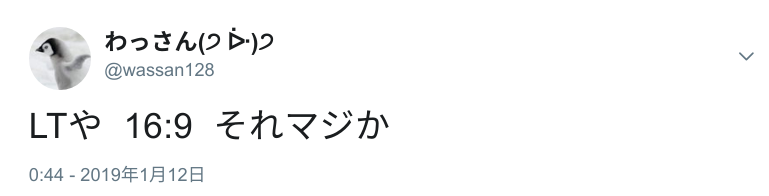
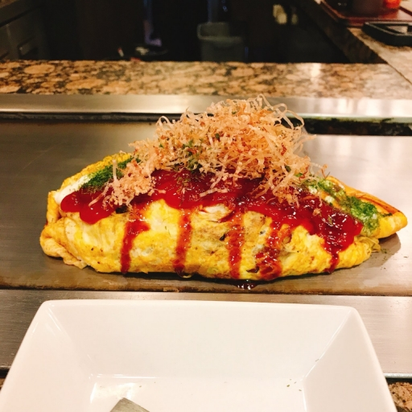
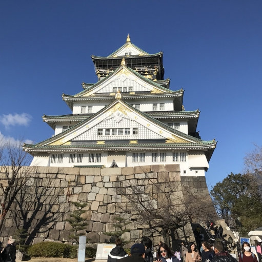

高専カンファレンス新春 in 大阪に参加した話
新春高専カンファが大阪であったので、沖縄高専勢の一員として参加しました。いわゆる参加記になります。
きっかけ
同じく沖縄高専の@gatyammingに誘われたのがきっかけでした。高専カンファ自体は存在を知っている、くらいの認識でした。大阪にはちゃんと行ったことがないこともあって気になり、何かと優柔不断な僕にしては割と即決した気がします。
LT枠への応募
せっかく沖縄から足を伸ばすのだしLTするか、と思い5分LT枠に応募しました。過去のカンファのLTタイトルなどを見つつ内容に悩んだ記憶が有ります。今回は「Chrome拡張開発楽しいよ」的なことを話そうと決めて応募し、しばらくして当選通知をもらえました。 それがだいたい2018年末だったので、冬休みが明けてからせっせとスライドを作り始めました。
カンファ
移動部門
今回はLCCで行ってLCCで帰ってくるという賭けに出ました(peachもjetstarも利用経験がなかった)。当日13時開始のカンファに沖縄から参加するに当たって前日の夜、すなわち金曜日の夜に出発して日付が変わる前には宿泊先で落ち着いている予定でした。まあいうて大丈夫やろ！ｗと思っていた時期が僕にもありましたが、便の出発は1時間半遅れました。大阪には日付が変わる直前につくこととなりました。
深夜部門
 ふと、カンファのwikiを見に行くと、「16:9」という文字が目に入ります。4:3で作られた僕のLTは横に伸びていきました。 修正や微調整をしていたら何故か4時になっていました。
当日部門
会場に行く前に松屋でお昼を済ませました。そのときにjigインターンの皆さんと合流しました。@gatyammingと人々は知り合い同士で僕はほぼ初対面、という構図だったので最初はひたすらコミュ症を発揮していたような気がしますが会場につくまでのあいだに話ができたりして楽しかったです。人々とは夕飯もご一緒させてもらうなどして、交流できたのでよかったです。
さて、会場ではいろんなLTを聞きましたが、LT一発目から量子コンピュータの話で、その後も濃いLTが続きました。知らない知識やテック系以外にも興味深い話などが盛りだくさんで、ほぼ徹夜状態でも眠くなりませんでした。
僕のLTはオオトリで、前述の通りChrome拡張開発の話をしました。
僕は周りにChrome拡張を自作している人を見かけたことがなかったので、布教するか、というモチベーションでした。そういう目的も有り、内容としては「難しくないよ」「楽しいよ」ということを意識し、あまり技術的な内容は盛り込みませんでした。 個人的に新しいタブを書き換えるChrome拡張はいくつか作ったことが有り、簡単にできることを知っていたのでその話をしました。実際、HTMLと設定ファイル(manifest.json)を適当に書くだけで作れてしまうので、ハードルはかなり低いと思います。今回紹介したやや新しいタブはHTMLとmanifestファイルのみの最小構成になっています。最初の一歩は本当に小さくて良くて、そこから先はCSSを使って自分の好きなようにデザインをいじるなり、JavaScriptやChromeの提供するAPIを組み合わせて凝ったことをしていけば良いと思います。 僕はデフォルトの新しいタブの画面が好きではなかったので今までいろんな改造をしてきましたが、その中でも気合を入れて作ったのが最後に紹介したchroshceでした。
LT中にツイートでたくさんのコメントを頂き、ありがとうございました。今回のLTをきっかけにChrome拡張開発に興味を持ってくれた方がいれば嬉しい限りです。
おわりに
専攻科2年生にして初めてのカンファ参加でしたが、なかなか楽しめました。過去に他の技術系イベントでお会いした方とも、新しくお会いした方とも話ができてとても充実していました。LTも応募してよかったなと思っています。
ちなみに翌日は大阪観光を楽しめました。帰りの飛行機は定刻に飛び、無事沖縄に帰ることができました。  
運営の方や今回お話してくださった皆さんありがとうございました。来年度からは社会人ですが、カンファには顔を出すかもしれませんし、それ以外にもまたお会いする機会があればその時はよろしくお願いします。
またもし今回紹介したChrome拡張でわからないことなどがあれば気軽にTwitter(@wassan128)などにご連絡ください。 以上です。